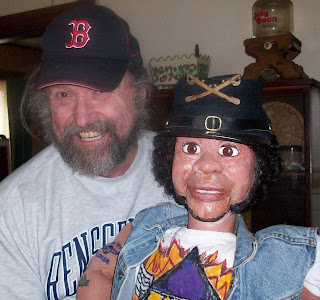

Victor upgrade
3/20/2009
While you will find me working at repairing or otherwise refurbishing a vent figure most any day of the week, there are some jobs I refer to others rather than accept myself. Such was the case when John Wayne Peel (below) contacted me about adding winkers to "Victor".
{kind=link}

I've installed winkers in hundreds of figures over the years, but no more. That's a job I now refer to my son, Kevin. So...at my suggestion, John did send "Victor" to Kevin and upon completion of the job, I received these words excerpted from John's recent letter:"Clinton,
"Great! Kevin put in a winker and blinkers. He also made the mouth open wider and replaced all of my pathetic attempts at mechanics. It was a wonderful job and I thank you for recommending him to me.
"Great! Kevin put in a winker and blinkers. He also made the mouth open wider and replaced all of my pathetic attempts at mechanics. It was a wonderful job and I thank you for recommending him to me.
"I hand painted the shirt and the buckle is from Gettysburg, Pennsylvania. The hat and all of the accouterments came from a special supplier of Civil War reenactment merchandise. I also painted all the tattoos on his arms (made splendidly by Mary Ann Taylor, by the way.) Thank you once again for making the reconstruction of Victor possible ... I could not be happier that this figure is done and I can now perform with him thanks to you and Kevin!"
Sincerely,
John Wayne Peel
Sincerely,
John Wayne Peel